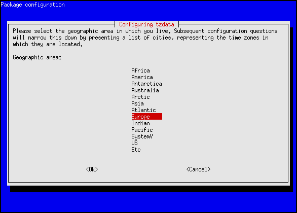
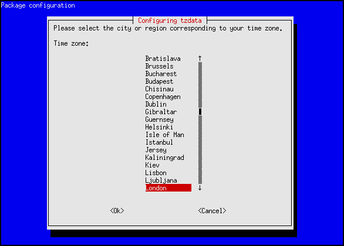

Accurate time keeping on your server is vital for LibreTime performance. You can confirm that the date and time of your server are set correctly with the date command:
dateThe server should respond with the date, time, time zone and year in a format similar to the following example:
Tue Jul 2 15:08:57 BST 2013If the time on your server is wrong, it is recommended that you take LibreTime off-air until the problem is fixed.
Configuring NTP
Although it is possible to set the date and time of the server manually, this is not recommended because the server clock can drift over time, compromising the accuracy of your broadcast schedule. If your LibreTime server is permanently connected to the Internet, you can synchronize your server to a time server with the ntp program. If ntp** is not yet installed, you can enter the following command on Debian or Ubuntu:
sudo apt-get install ntpOptionally, open the ntp configuration file in the nano editor to add further time server names:
sudo nano /etc/ntp.confOn Ubuntu GNU/Linux, the default time server is ntp.ubuntu.com, but there are many other time servers available on the public Internet, including the group of servers listed at http://www.pool.ntp.org/ for each country. Using a variety of NTP servers located closely to your LibreTime server should produce the most accurate results. For example, for a server in the United Kingdom you could use the following list:
# You do need to talk to an NTP server or two (or three).
server ntp.ubuntu.com
server 0.uk.pool.ntp.org
server 1.uk.pool.ntp.org
server 2.uk.pool.ntp.org
server 3.uk.pool.ntp.orgEnter the server names you require, press Ctrl+O to write out the /etc/ntp.conf file, then Ctrl+X to exit nano. Restart the ntp service with:
sudo invoke-rc.d ntp restartThe server should respond:
* Stopping NTP server ntpd [ OK ]
* Starting NTP server ntpd [ OK ]Then use the ntpq -p command to confirm that ntp is working. This command should produce output similar to the following:
ntpq -p
remote refid st t when poll reach delay offset jitter
==================================================================
europium. 193.79.237.14 2 u 28 64 3 39.571 12.600 3.590
norb.v4.c 46.227.200.72 3 u 28 64 3 47.856 -6.908 10.028
82.113.15 193.62.22.82 2 u 29 64 3 11.458 -0.513 2.629
ntppub.le 158.43.192.66 2 u 91 64 2 122.781 44.864 0.001
dns0.rmpl 195.66.241.3 2 u 27 64 3 22.171 1.464 4.242Adjusting the server time zone
The data centre which hosts your LibreTime server could be located anywhere in the world. Some servers are set to Coordinated Universal Time or UTC (similar to Greenwich Mean Time or GMT), regardless of their location. LibreTime uses UTC time in its database for scheduling purposes, independent of the server time zone.
If the server time zone is not appropriate for integration with your station's other systems, on a Debian or Ubuntu server you can reconfigure the tzdata (time zone data) package with the command:
sudo dpkg-reconfigure tzdataThis command opens a menu in which you can select the continent that you require, by pressing the Enter key.

The next step is to select your nearest city, again by pressing the Enter key. The appropriate time zone is selected according to the information that you have entered.

The console output from the dpkg-reconfigure tzdata command will confirm the new setting:
Current default time zone: 'Europe/London'
Local time is now: Tue Jul 2 15:18:01 BST 2013.
Universal Time is now: Tue Jul 2 14:18:01 UTC 2013.